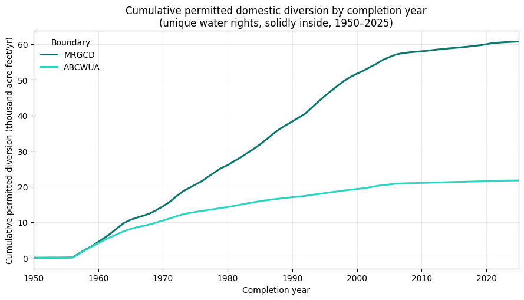

Domestic Wells inside MRGCD and ABCWUA — replication#
This notebook inventories domestic wells categorized as “active” in the New Mexico Office of State Engineer Point of Diversion (POD) dataset and their permitted diversions inside two administratively important geographic boundaries in New Mexico’s Middle Rio Grande Valley:
the Middle Rio Grande Conservancy District (MRGCD) jurisdictional area, and
the Albuquerque Bernalillo County Water Utility Authority (ABCWUA) service area.
It reproduces the numbers used in the accompanying white paper and talk. The headline result (OSE Points-of-Diversion vintage 2026-06-15) is:
Boundary |
Domestic wells |
Permitted diversion |
|---|---|---|
MRGCD |
22,916 |
63,477 acre-feet/yr |
ABCWUA |
7,901 |
22,465 acre-feet/yr |
“Domestic wells” here means unique domestic water rights, solidly inside the boundary — deduplicated to the water right, and counting PLSS section-centroid stacks only where the full 1-mile section box is inside the boundary (see the counting ladder in Step 3). The notebook prints the full ladder so a reader can see every modeling choice and how much each one moves the number.
Inputs are not redistributed in this repository. The three source shapefiles are public but large / third-party;
data/domestic_wells/README.mddocuments exactly where to download each one and where to place it. This notebook unzips them fromdata/domestic_wells/input/source_shapefiles/.
Setup#
Locate the package’s data/domestic_wells directory, define the analysis constants (the canonical
configuration — solidly-inside method, frozen 2026-07-12), and unzip the source shapefiles into a working directory.
Requirements: geopandas, pandas, shapely, matplotlib (Python 3.10+).
import warnings
warnings.filterwarnings("ignore")
import zipfile
from pathlib import Path
import geopandas as gpd
import pandas as pd
import matplotlib.pyplot as plt
from shapely.geometry import box
%matplotlib inline
# --- Locate the package root by walking up from the notebook ---
def find_package_root(start=None):
cur = Path(start or Path.cwd()).resolve()
for p in [cur, *cur.parents]:
if (p / "data" / "domestic_wells").is_dir():
return p
raise FileNotFoundError("Could not find the package root (containing data/domestic_wells) above the notebook.")
PACKAGE_ROOT = find_package_root()
DOMESTIC_DIR = PACKAGE_ROOT / "data" / "domestic_wells"
SRC_ZIP_DIR = DOMESTIC_DIR / "input" / "source_shapefiles"
WORK_DIR = DOMESTIC_DIR / "input" / "working_unzipped"
OUTPUT_DIR = DOMESTIC_DIR / "output"
WORK_DIR.mkdir(parents=True, exist_ok=True)
OUTPUT_DIR.mkdir(parents=True, exist_ok=True)
# --- Canonical analysis constants (frozen 2026-07-10) ---
DOM_CODES = ["DOM", "DOL", "PDM", "DCN"] # OSE domestic use codes
STACK_THRESH = 10 # >= 10 co-located wells + null qtr_4th => confirmed PLSS-centroid stack
HALF_SEC = 804.67 # half a US survey mile, metres: PLSS section-square half-width
CHART_START, CHART_END = 1950, 2025
# Print a repo-relative path (not machine-specific) to confirm the location resolved.
print("Package data directory:", DOMESTIC_DIR.relative_to(PACKAGE_ROOT))
Package data directory: data/domestic_wells
# Unzip the three source archives (idempotent: skips if already extracted).
# Each archive is flat (shapefile sidecars at the root of the zip).
ARCHIVES = {
"OSE_PODs.zip": ("OSE_PODs", "Points_of_Diversion.shp"),
"MRGCD-Jurisdictional-Boundary.zip": ("MRGCD-Jurisdictional-Boundary", "MRGCD_Jurisdictional_Area.shp"),
"ABCWUAServiceArea.zip": ("ABCWUAServiceArea", "ABCWUAServiceArea.shp"),
}
shp_paths = {}
for archive, (folder, shp) in ARCHIVES.items():
dest = WORK_DIR / folder
shp_path = dest / shp
if not shp_path.exists():
zip_path = SRC_ZIP_DIR / archive
if not zip_path.exists():
raise FileNotFoundError(
f"Missing source archive: {zip_path}\n"
f"See data/domestic_wells/README.md for where to download and place it."
)
dest.mkdir(parents=True, exist_ok=True)
with zipfile.ZipFile(zip_path) as zf:
zf.extractall(dest)
shp_paths[folder] = shp_path
POD_SHP = shp_paths["OSE_PODs"]
MRGCD_SHP = shp_paths["MRGCD-Jurisdictional-Boundary"]
ABCWUA_SHP = shp_paths["ABCWUAServiceArea"]
pd.DataFrame(
{"shapefile": [str(p.relative_to(DOMESTIC_DIR)) for p in shp_paths.values()],
"exists": [p.exists() for p in shp_paths.values()]}
)
| shapefile | exists | |
|---|---|---|
| 0 | input/working_unzipped/OSE_PODs/Points_of_Dive... | True |
| 1 | input/working_unzipped/MRGCD-Jurisdictional-Bo... | True |
| 2 | input/working_unzipped/ABCWUAServiceArea/ABCWU... | True |
Step 1 — Load the Points of Diversion and select active domestic wells#
The OSE Points of Diversion (POD) layer is every permitted well and surface diversion in New Mexico.
We keep rows that are active (pod_status == "ACT") and carry a domestic use code
(DOM, DOL, PDM, DCN).
Location-quality caveat. A majority of OSE POD coordinates are not field-measured — they are dropped at the centroid of the PLSS legal description (accurate to the ~40–160 acre cell, not to the well). Many distinct wells therefore stack on one coordinate. We do not use raw coordinates for parcel-level claims; the only spatial test here is point-in-boundary, and Step 3 explicitly handles the boundary-ambiguous PLSS stacks.
pods = gpd.read_file(POD_SHP)
print(f"POD layer: {len(pods):,} features CRS: {pods.crs}")
print(f"Boundaries will be reprojected to the POD CRS ({pods.crs.to_epsg()}) for all spatial tests.")
POD layer: 278,408 features CRS: EPSG:26913
Boundaries will be reprojected to the POD CRS (26913) for all spatial tests.
Step 2 — Load the two boundaries#
Each boundary is reprojected to the POD coordinate system and dissolved to a single geometry.
MRGCD — the district’s jurisdictional area (static 2008 OSE/MRGCD layer, 6 polygons).
ABCWUA — the service-area polygon from the OSE “New Mexico Public Water System Boundaries” layer (
ABCWUAServiceArea.shp). This is the state regulator’s PWS footprint.
ABCWUA boundary is provisional. The OSE PWS polygon and ABCWUA’s own “Know Your Zone” map disagree by roughly ~1,200 domestic rights. The white paper uses the OSE polygon as the more conservative footprint and flags it as provisional. See
data/domestic_wells/README.md.
mrgcd_boundary = gpd.read_file(MRGCD_SHP).to_crs(pods.crs).union_all()
abcwua_boundary = gpd.read_file(ABCWUA_SHP).to_crs(pods.crs).union_all()
pd.DataFrame({
"boundary": ["MRGCD", "ABCWUA"],
"area_acres": [round(mrgcd_boundary.area / 4046.8564224, 1),
round(abcwua_boundary.area / 4046.8564224, 1)],
})
| boundary | area_acres | |
|---|---|---|
| 0 | MRGCD | 280616.2 |
| 1 | ABCWUA | 119462.2 |
Step 3 — The counting ladder#
We count in four steps (“rungs”). Each rung is a defensible number; the differences between them are the modeling choices, made explicit.
Active domestic PODs — every active domestic point of diversion inside the boundary.
Physical well locations — drop OSE administrative records (
CLWchange-of-location filings and-Xadministrative suffixes) that are not new wells on the ground.Unique water rights — deduplicate multiple wellheads of one right to the base right (
RG-NNNNN), and count each right’s permitted diversion once (a right’s AF is shared across its-POD2 / -POD3wellheads, so we take the maxtotal_divover the right). A reference count; the headline (rung 4) refines it for boundary location-uncertainty.Unique rights, solidly inside ★ CANONICAL — the headline. Where a confirmed PLSS-centroid stack (≥ 10 wells sharing one coordinate, no quarter-quarter refinement) sits near the boundary, its ~1-square-mile section could straddle the line. This rung counts such a stack only when its entire section box is inside the boundary, dropping the boundary-ambiguous ones (we cannot confirm those wells are inside). This is the headline number.
def add_stack_n(gdf):
"Count PODs sharing an exact coordinate (rounded to 0.1 m) — the PLSS-stacking signal."
pairs = list(zip(gdf.geometry.x.round(1), gdf.geometry.y.round(1)))
counts = pd.Series(pairs).value_counts()
out = gdf.copy()
out["stack_n"] = [counts[p] for p in pairs]
return out
def domestic_in(boundary_geom):
"Active domestic PODs whose location falls inside the boundary."
clipped = gpd.clip(pods, boundary_geom)
active = clipped[clipped["pod_status"] == "ACT"]
return active[active["use_"].isin(DOM_CODES)].copy()
def counting_ladder(dom, boundary_geom, label):
"Return the four-rung counting ladder for one boundary."
dom = dom.copy()
dom["pod_base"] = dom["pod_file"].str.extract(r"^([A-Z]+-\d+)", expand=False)
dom["is_admin"] = (
dom["pod_file"].str.contains("CLW", na=False)
| dom["pod_file"].str.contains(r"-X(-|$)", regex=True, na=False)
)
dom = add_stack_n(dom)
# rung 1 — all active domestic PODs
n_all, af_all = len(dom), dom["total_div"].sum()
# rung 2 — physical wells (administrative records removed)
phys = dom[~dom["is_admin"]]
n_phys, af_phys = len(phys), phys["total_div"].sum()
# rung 3 — unique water rights (CANONICAL): dedup to base right, AF once per right
n_rights = phys["pod_base"].nunique()
af_rights = phys.groupby("pod_base")["total_div"].max().sum()
# rung 4 — solidly inside: drop boundary-ambiguous PLSS-centroid stacks
plss = dom[dom["qtr_4th"].isna() & (dom["stack_n"] >= STACK_THRESH)].copy()
plss["square_inside"] = plss.geometry.apply(
lambda g: box(g.x - HALF_SEC, g.y - HALF_SEC,
g.x + HALF_SEC, g.y + HALF_SEC).within(boundary_geom)
)
near_edge_idx = plss[~plss["square_inside"]].index
solid = dom[~dom.index.isin(near_edge_idx) & ~dom["is_admin"]]
solid_rights = solid.groupby("pod_base")["total_div"].max()
return {
"boundary": label,
"active_domestic_pods": n_all,
"active_domestic_af": round(af_all),
"physical_wells": n_phys,
"physical_af": round(af_phys),
"unique_rights": n_rights, # reference count (wells)
"unique_rights_af": round(af_rights), # reference count (AF)
"solidly_inside_rights": len(solid_rights), # <- CANONICAL headline (wells)
"solidly_inside_af": round(solid_rights.sum()), # <- CANONICAL headline (AF)
"near_edge_pods_excluded": len(near_edge_idx),
}
ladder = pd.DataFrame([
counting_ladder(domestic_in(mrgcd_boundary), mrgcd_boundary, "MRGCD"),
counting_ladder(domestic_in(abcwua_boundary), abcwua_boundary, "ABCWUA"),
]).set_index("boundary")
ladder.T
| boundary | MRGCD | ABCWUA |
|---|---|---|
| active_domestic_pods | 28343 | 9406 |
| active_domestic_af | 78448 | 26690 |
| physical_wells | 28150 | 9329 |
| physical_af | 77879 | 26463 |
| unique_rights | 24239 | 8557 |
| unique_rights_af | 67389 | 24406 |
| solidly_inside_rights | 22916 | 7901 |
| solidly_inside_af | 63477 | 22465 |
| near_edge_pods_excluded | 1433 | 719 |
Step 4 — Validate against the published (canonical) numbers#
The headline is rung 4, unique water rights solidly inside (the section-square rule). Because this notebook uses the same POD vintage (2026-06-15) and the same boundaries as the white paper, it should reproduce the published figures exactly.
CANONICAL_TARGETS = {
"MRGCD": {"unique_rights": 22916, "unique_rights_af": 63477},
"ABCWUA": {"unique_rights": 7901, "unique_rights_af": 22465},
}
checks = []
for b, tgt in CANONICAL_TARGETS.items():
got_w = int(ladder.loc[b, "solidly_inside_rights"])
got_af = int(ladder.loc[b, "solidly_inside_af"])
checks.append({
"boundary": b,
"wells": got_w, "target_wells": tgt["unique_rights"], "d_wells": got_w - tgt["unique_rights"],
"af": got_af, "target_af": tgt["unique_rights_af"], "d_af": got_af - tgt["unique_rights_af"],
"match": got_w == tgt["unique_rights"] and got_af == tgt["unique_rights_af"],
})
check_df = pd.DataFrame(checks).set_index("boundary")
assert check_df["match"].all(), "Replication does not match the canonical numbers — investigate."
print("All boundaries reproduce the canonical numbers exactly.")
check_df
All boundaries reproduce the canonical numbers exactly.
| wells | target_wells | d_wells | af | target_af | d_af | match | |
|---|---|---|---|---|---|---|---|
| boundary | |||||||
| MRGCD | 22916 | 22916 | 0 | 63477 | 63477 | 0 | True |
| ABCWUA | 7901 | 7901 | 0 | 22465 | 22465 | 0 | True |
Step 5 — Cumulative permitted diversion over time#
Each unique water right is placed at the earliest completion year across its wellheads, with its permitted diversion counted once. Rights with no parseable completion date, or dated outside 1950–2025, are excluded from the curve but reconciled to the headline total below.
def annual_rights(dom, boundary_geom, label):
"One row per unique right: earliest completion year + permitted AF (once per right)."
dom = dom.copy()
dom["pod_base"] = dom["pod_file"].str.extract(r"^([A-Z]+-\d+)", expand=False)
dom["is_admin"] = (
dom["pod_file"].str.contains("CLW", na=False)
| dom["pod_file"].str.contains(r"-X(-|$)", regex=True, na=False)
)
dom = add_stack_n(dom)
# section-square rule (same as ladder rung 4): drop boundary-ambiguous PLSS-centroid stacks
plss = dom[dom["qtr_4th"].isna() & (dom["stack_n"] >= STACK_THRESH)].copy()
plss["square_inside"] = plss.geometry.apply(
lambda g: box(g.x - HALF_SEC, g.y - HALF_SEC, g.x + HALF_SEC, g.y + HALF_SEC).within(boundary_geom))
near_edge_idx = plss[~plss["square_inside"]].index
phys = dom[~dom.index.isin(near_edge_idx) & ~dom["is_admin"]].copy()
phys["year"] = pd.to_datetime(phys["finish_dat"], errors="coerce").dt.year
rights = phys.groupby("pod_base").agg(year=("year", "min"), af=("total_div", "max"))
n_total, af_total = len(rights), rights["af"].sum()
dated = rights[(rights["year"] >= CHART_START) & (rights["year"] <= CHART_END)]
n_undated, af_undated = n_total - len(dated), af_total - dated["af"].sum()
idx = pd.RangeIndex(CHART_START, CHART_END + 1, name="year")
new_rights = dated.groupby("year").size().reindex(idx, fill_value=0)
new_af = dated.groupby("year")["af"].sum().reindex(idx, fill_value=0)
ts = pd.DataFrame({
"boundary": label, "year": idx,
"new_rights": new_rights.values, "new_af": new_af.values.round(1),
"cumulative_rights": new_rights.cumsum().values,
"cumulative_af": new_af.cumsum().values.round(1),
})
print(f"{label}: dated-curve endpoint {int(ts['cumulative_rights'].iloc[-1]):,} rights / "
f"{ts['cumulative_af'].iloc[-1]:,.0f} AF + {n_undated:,} undated ({af_undated:,.0f} AF) "
f"= total {n_total:,} rights / {af_total:,.0f} AF")
return ts
ts_mrgcd = annual_rights(domestic_in(mrgcd_boundary), mrgcd_boundary, "MRGCD")
ts_abcwua = annual_rights(domestic_in(abcwua_boundary), abcwua_boundary, "ABCWUA")
timeseries = pd.concat([ts_mrgcd, ts_abcwua], ignore_index=True)
MRGCD: dated-curve endpoint 21,851 rights / 60,712 AF + 1,065 undated (2,765 AF) = total 22,916 rights / 63,477 AF
ABCWUA: dated-curve endpoint 7,605 rights / 21,720 AF + 296 undated (745 AF) = total 7,901 rights / 22,465 AF
fig, ax = plt.subplots(figsize=(9, 5.2))
colors = {"MRGCD": "#0f766e", "ABCWUA": "#2dd4bf"}
for label, ts in [("MRGCD", ts_mrgcd), ("ABCWUA", ts_abcwua)]:
ax.plot(ts["year"], ts["cumulative_af"] / 1000, label=label, color=colors[label], linewidth=2.2)
ax.set_title("Cumulative permitted domestic diversion by completion year\n(unique water rights, solidly inside, 1950–2025)")
ax.set_xlabel("Completion year")
ax.set_ylabel("Cumulative permitted diversion (thousand acre-feet/yr)")
ax.legend(title="Boundary", frameon=False)
ax.grid(True, alpha=0.25)
ax.set_xlim(CHART_START, CHART_END)
fig.tight_layout()
fig.savefig(OUTPUT_DIR / "cumulative_permitted_diversion.png", dpi=150)
plt.show()

Step 6 — Write derived outputs#
The counting ladder and the annual time series are written to data/domestic_wells/output/ as CSVs
(regenerated on every run; not committed by default).
ladder.to_csv(OUTPUT_DIR / "domestic_wells_counting_ladder.csv")
timeseries.to_csv(OUTPUT_DIR / "domestic_wells_cumulative_time_series.csv", index=False)
print("Wrote:")
for f in ["domestic_wells_counting_ladder.csv",
"domestic_wells_cumulative_time_series.csv",
"cumulative_permitted_diversion.png"]:
print(" data/domestic_wells/output/" + f)
Wrote:
data/domestic_wells/output/domestic_wells_counting_ladder.csv
data/domestic_wells/output/domestic_wells_cumulative_time_series.csv
data/domestic_wells/output/cumulative_permitted_diversion.png
Notes and caveats#
Definition. The headline counts unique domestic water rights, solidly inside (rung 4), not raw POD rows. One right can have several wellheads; its permitted diversion is counted once. A PLSS section-centroid stack is counted only where its full 1-mile section box is inside the boundary.
Permitted, not consumed.
total_divis the permitted annual diversion on the right — an administrative ceiling, not measured pumping or consumptive use.ABCWUA boundary is provisional (OSE PWS polygon vs. ABCWUA’s own service-zone map differ by ~1,200 rights). See
data/domestic_wells/README.md.POD location quality. Most coordinates are PLSS-cell centroids, not field GPS. This notebook only ever tests point-in-boundary and explicitly handles boundary-ambiguous PLSS stacks (rung 4); it makes no parcel-level claims.
Vintage. Numbers above are for OSE POD vintage 2026-06-15. A newer POD download will shift the counts; re-run the notebook to regenerate.